Requirement Gathering
USERS & USER RELATIONSHIP
Requirement Analysis
FUNCTIONALITIES
Requirement Analysis
USER FLOW
Investor - Startup Founders
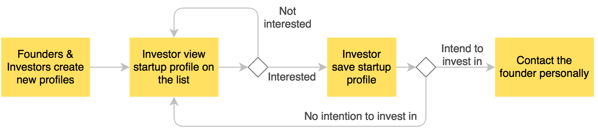Local Government - Startup Founders / Overseas Talents
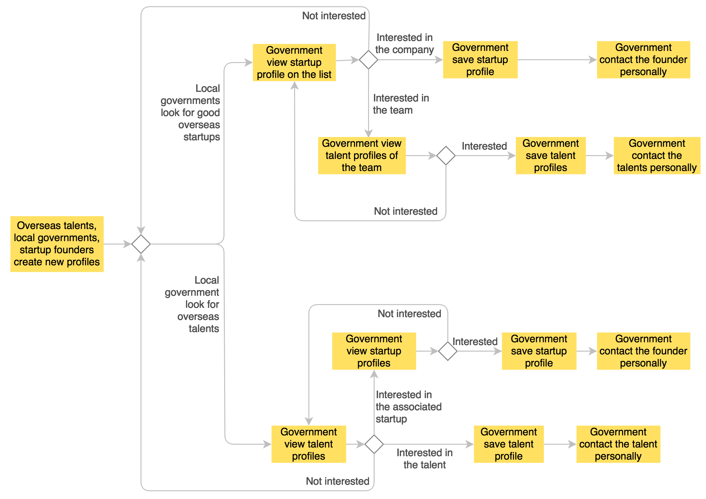System Design
INFORMATION ARCHITECTURE
System Design
PROTOTYPE

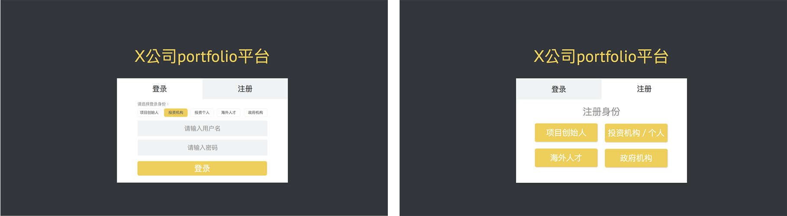
Usability Test
TEST PREPARATION
Testers
I recruited four business analysts under the Business Development department at iBeeHub as testers. They are very familiar with two important stakeholders - startups and investors. They also had regular contact with some local governments in terms of entrepreneurship events. Moreover, they themselves can also be considered as overseas talents. Considering all these factors and my limited time, they were the most suitable testers at that time because they were familiar with all four groups of users.
Facilities
Computers & Skype. Since I was already back to China when I did this project, the usability test had to be done remotely via Skype. Video calling and screen sharing were used for me to listen to their immediate feedback and observe the user behaviours while they are performing the tasks.
Script
- Opening: Introduce the four main users of the website and the tasks. Encourage the tester to provide their own opinions and feedback while performing the tasks.
- Tasks: Log in as four different roles and perform related tasks (e.g. create, view, edit).
- Ending: Ask the tester to finish the System Usability Scale questionnaire.
Evaluation techniques
Cognitive Walkthrough
Focusing on how easy it is for new users to accomplish tasks with the system.
Think-aloud Protocol
Participants are asked to say whatever comes into their mind as they complete the tasks.
System Usability Scale
Subject assessments of usability.
Usability Test
RESULT & ANALYSIS
Detailed feedbacks and results are omitted, and only the result for the System Usability Scale is presented here.
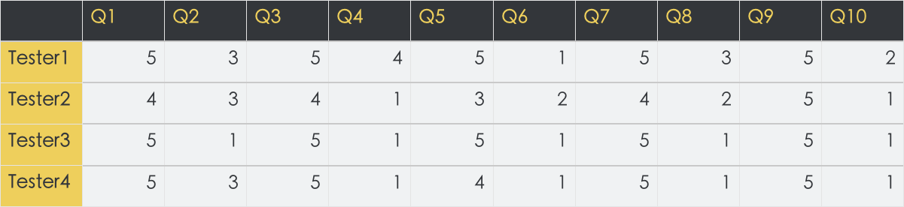The result is analysed in the following chart based on the given criteria.
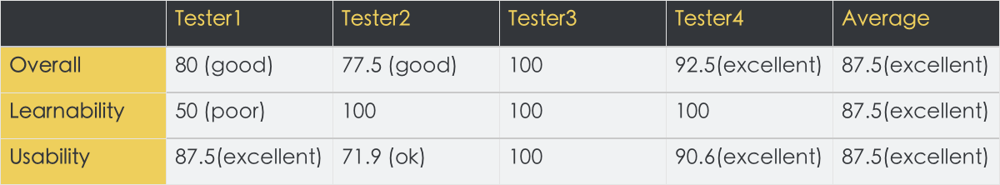Remark: the result of this SUS would be very subjective. Thus, it is only used to supplement the main results.
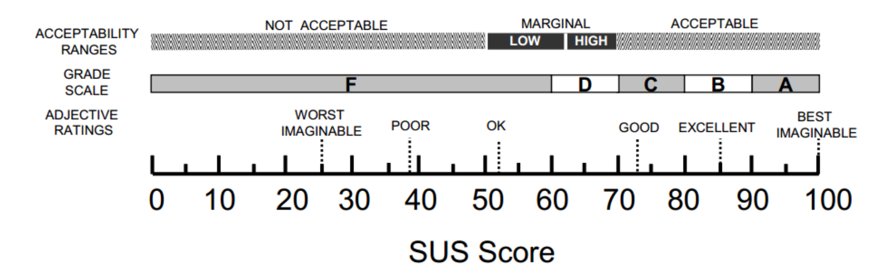
Usability Test
FEEDBACKS & IMPROVEMENTS
Feedback 1 - Severity: High
User does not know that “FOUNDER” is part of their username when creating new profile.
Improvements:
Eliminate username prefix “FOUNDER” and ask users to choose their identity when login.
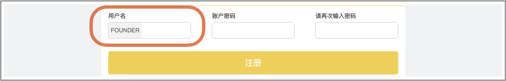 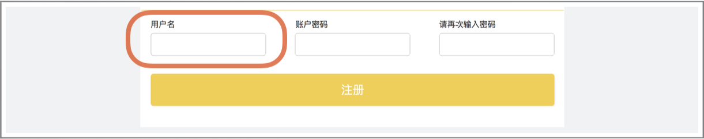 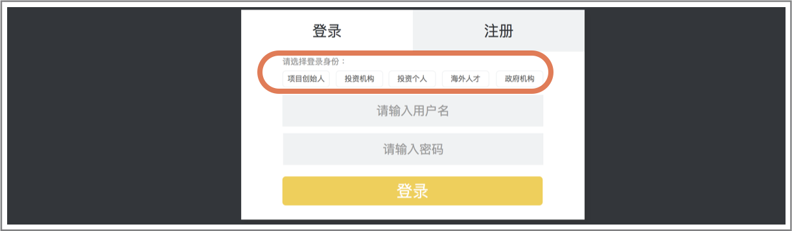Feedback 2 - Severity: Medium
Users are redirected to login page directly after clicking “Register”. Users are not sure if they have created new profile successfully.
Improvement:
Add pop-up window and remind users to remember their username and password.
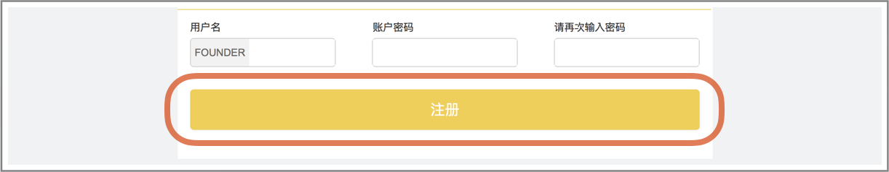 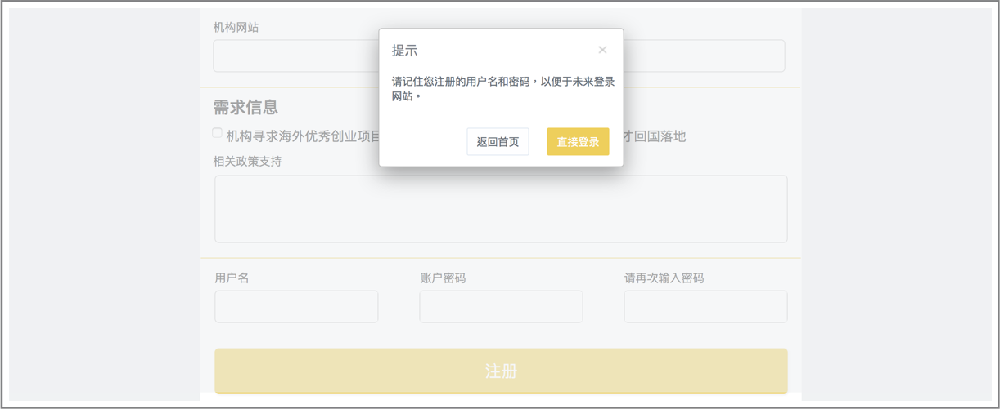Feedback 3 - Severity: Low
Users find it inconsistent with the drop-down selection at the other registration page.
Improvement:
Change it to a drop-down selection.
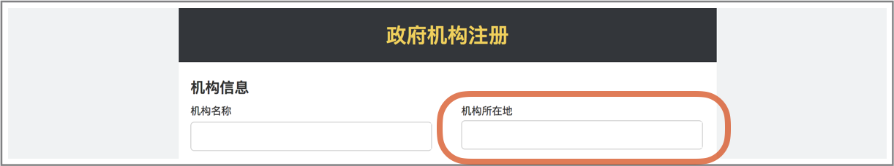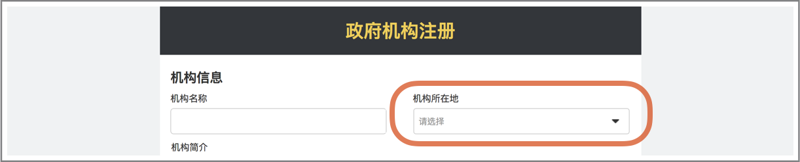